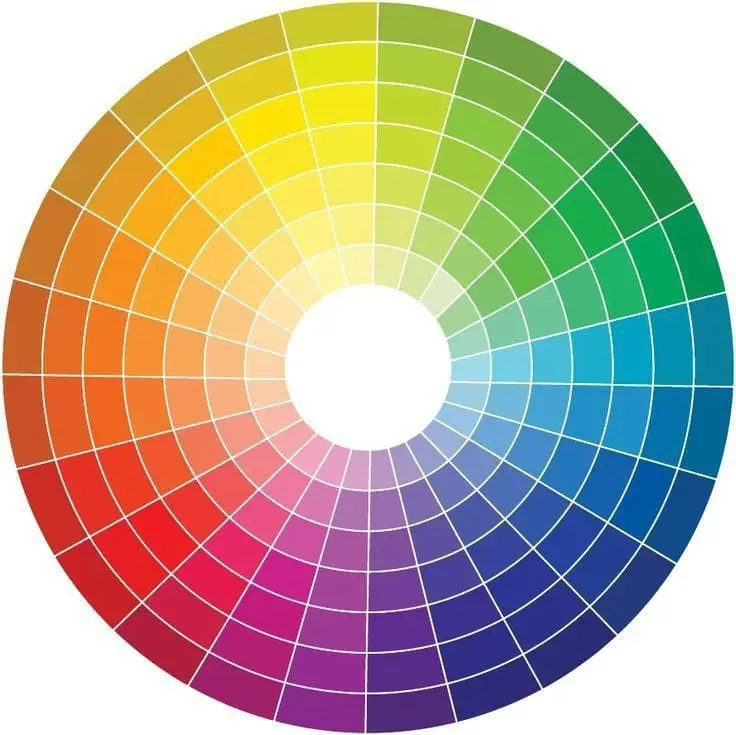
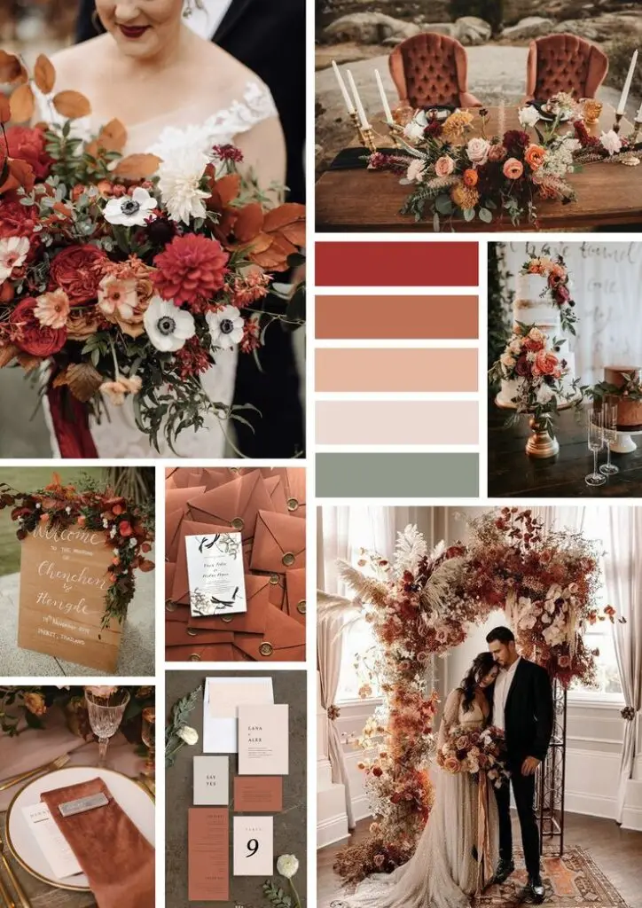
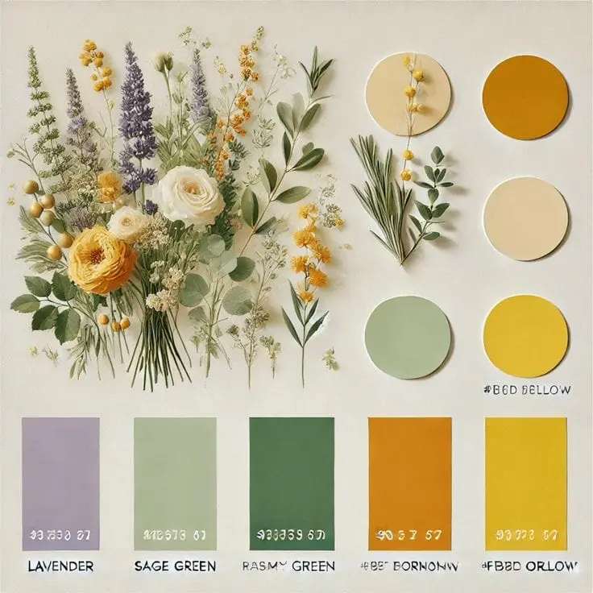
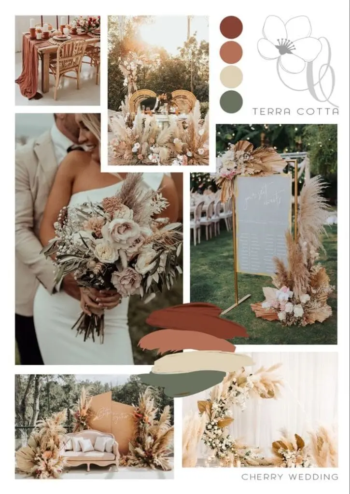

When planning a wedding in the Bordeaux region, choosing trending colours plays a crucial role in creating a harmonious atmosphere and aesthetic. Your wedding colours aren't just decorative elements; they tell a story, stir emotions and can turn your special day into an unforgettable event.
Why does the choice of colours matter?
The choice of colours has a significant impact because it can define the atmosphere of your wedding, influence your guests' emotions and bring visual cohesion to the whole event. Well-chosen colours can reflect your personality and style, creating a memorable experience for everyone.
The new trending colours of 2025:
In 2025, the trending wedding colours are inspired by a blend of classic elegance and bold modernity. Here are a few palettes to consider:
- Sky blue and ivory white: this combination evokes purity and serenity, perfect for a romantic, elegant wedding.
- Sage green and gold: a palette combining earthy tones with a touch of luxury, ideal for a chic, natural wedding.
- Terracotta and powder pink: warm, welcoming colours that create a convivial, bohemian atmosphere.
- Lavender and silver: a blend of softness and sophistication, perfect for a refined, modern wedding.
- Burgundy and navy blue: deep, rich shades that bring a touch of elegance and grandeur to your ceremony.
Harmonising tones
To create a coherent, pleasing palette, it is essential to choose colours that work well together. The colour wheel is a valuable tool for identifying complementary colours and analogous shades.
Start by choosing a dominant colour that will be the common thread of your palette. Once the dominant colour is chosen, add complementary colours to create balance. Then work with different shades (variations in lightness) and tones (variations in saturation) of your dominant colour to create depth and visual interest.
Be careful to balance the proportions of each colour in your palette. Use the 60–30–10 rule: 60% for the dominant colour, 30% for the secondary colours and 10% for accents.

Colour harmony ideas for a wedding
- Romantic: powder pink, ivory and gold
- Country: sage green, lavender and beige
- Chic and modern: navy blue, beige and brown
- Bohemian: terracotta, cream and eucalyptus

Seasonal considerations
The season of your wedding in the Bordeaux region can also influence your choice of colours. Here are a few ideas for matching colours to the seasons:
- Spring weddings: spring means renewal and blossoming, making it the ideal season for bright and pastel colours. Think pale pink, lavender, mint green and sky blue for a fresh, romantic atmosphere.
- Summer weddings: summer is the perfect time for vibrant, bold colours. Coral, turquoise, lemon yellow and fuchsia can bring a touch of cheerfulness and energy to your wedding.
- Autumn weddings: autumn offers a palette of warm, rich colours such as burgundy, burnt orange, brown and dark green. These shades create a warm, welcoming atmosphere.
- Winter weddings: winter lends itself to cool and metallic colours such as glacier blue, silver, white and grey. These shades evoke elegance and purity.
A history of wedding colours
Wedding colour trends have evolved over the decades. In the 1980s, weddings were often decorated in pastel colours, while the 1990s saw the rise of brighter shades. In the 2000s, neutral and metallic tones became popular, creating a modern, elegant style. Today, couples opt for varied colour palettes, blending tradition and modernity.
Your choice of colours can be influenced by your wedding venue, adding a unique, personal touch to your big day.
- Beach wedding: an aquatic palette of turquoise, sand, coral and white. These colours evoke the sea, the sun and the relaxed atmosphere of idyllic beaches.
- Vineyard wedding: a refined palette of burgundy, gold, olive green and ivory. These elegant colours reflect the richness and sophistication of the vineyards.
- Château wedding: chic and modern, with navy blue, white, cream and a touch of red. It is a classic, sophisticated palette that suits a regal setting perfectly.
- Countryside wedding: rustic and pastoral, with lavender, sage green, beige and pale yellow. These soft, natural colours reflect the quiet beauty of the countryside.
Inspiration by destination

DIY decor
To personalise your wedding in Bordeaux, think about DIY decor ideas based on your chosen colours. For example, create centrepieces with flowers that match your palette or make garlands of colourful bunting. These personal touches will bring a unique atmosphere to your ceremony.
Decorative elements
Think about how your colour choices carry through to the different elements of your wedding decor, from the flowers to the tablecloths, the bridesmaids' outfits and the accessories. A well-thought-out palette will bring visual cohesion and natural elegance to your day.
Fashion and accessories
Fashionable bridal accessories include flower crowns, delicate jewellery in rose gold or pearls, and long veils or tulle capes. For the groom, velvet bow ties, personalised cufflinks and suit jackets with colourful linings are in vogue. In the decor, fairy lights, paper lanterns and wood and rattan pieces create a warm, welcoming atmosphere.

Themes and styles
Choosing a specific theme for your wedding helps create a harmonious, memorable atmosphere. A bohemian wedding relies on earthy tones (terracotta, cream, eucalyptus) and natural decor with oriental rugs and lanterns.
The country style favours sage green, lavender and beige, with glass jars and linen tablecloths for a rustic feel.
A chic, modern wedding plays with navy blue, white and cream, with clean lines and sparkling lights, while a romantic wedding dresses in powder pink, ivory and gold, with candles and silk drapes.
For a retro touch, a vintage wedding pairs mint, pale blue and antique objects such as vintage suitcases.
Finally, a nautical wedding evokes the ocean with navy blue, white and maritime elements such as anchors and seashells. Choose your theme according to your passions and your wedding venue, and make sure every detail is consistent, from the invitations to the decor.
A client's review
"Our autumn-toned wedding was a real trip back to childhood. Our guests never stopped complimenting the harmony of colours, which brought unrivalled warmth and elegance."
Nadège & Alexandre
Tips
- Choose colours that represent you: pick colours that reflect your style and personality.
- Experiment with samples: test different combinations to see what works best together.
- Consider the setting: make sure your colours go well with your ceremony and reception venue.
My view as a professional
"Choosing a colour palette suited to the couple's personality and the season is essential. A good colour combination can turn a simple event into a memorable, visually coherent experience."
Alexandra Ambert
Experiment and adapt
Don't be afraid to experiment with colour samples and ask for opinions. Sometimes unexpected combinations can surprise you with their beauty. The important thing is to make sure the chosen colours match your vision and the atmosphere you want to create.
In short…
Choosing the ideal colour palette for your wedding is a creative process that deserves thought and planning. By considering the impact of colours, harmonies and seasons, as well as professional opinions and advice, you can create an unforgettable visual and emotional experience for you and your guests.
Colours aren't just decorative elements; they tell a story, stir emotions and can turn a ceremony into an unforgettable event. Every shade and every tone can evoke memories and feelings that will stay etched in everyone's memory.
So dream in colour and let your wedding reflect your love and your unique style.
Lovely Day Event offers several services
Wedding planning
I step in at every stage of your preparations and guide you through your choices, bringing ideas and suggestions so that your wedding looks like no one but you.
Wedding design
Creative and passionate, I am a certified Wedding Designer and I create a scenographic atmosphere that matches the theme of your wedding.
On-the-day coordination
I will be the conductor of your day, managing the suppliers, the set-up of your decor and the smooth running of this beautiful day.